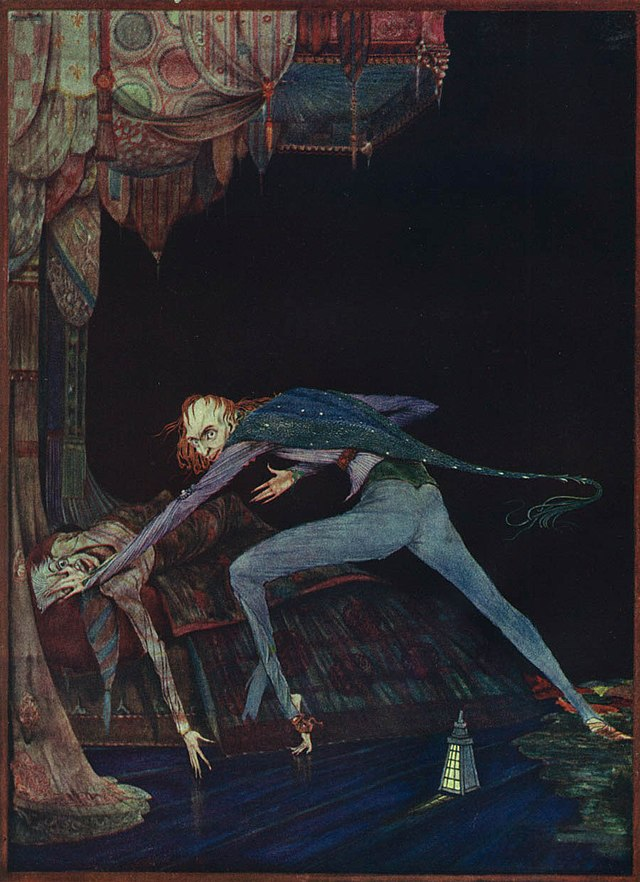

LE CŒUR RÉVÉLATEUR #
Vrai ! – je suis très nerveux, épouvantablement nerveux, je l’ai toujours été ; mais pourquoi prétendez-vous que je suis fou ? La maladie a aiguisé mes sens, – elle ne les a pas détruits, – elle ne les a pas émoussés. Plus que tous les autres, j’avais le sens de l’ouïe très fin. J’ai entendu toutes choses du ciel et de la terre. J’ai entendu bien des choses de l’enfer. Comment donc suis-je fou ? Attention ! Et observez avec quelle santé, – avec quel calme je puis vous raconter toute l’histoire.
Il est impossible de dire comment l’idée entra primitivement dans ma cervelle ; mais, une fois conçue, elle me hanta nuit et jour. D’objet, il n’y en avait pas. La passion n’y était pour rien. J’aimais le vieux bonhomme. Il ne m’avait jamais fait de mal. Il ne m’avait jamais insulté. De son or je n’avais aucune envie. Je crois que c’était son œil ! Oui, c’était cela ! Un de ses yeux ressemblait à celui d’un vautour, – un œil bleu pâle, avec une taie dessus. Chaque fois que cet œil tombait sur moi, mon sang se glaçait ; et ainsi, lentement, – par degrés, – je me mis en tête d’arracher la vie du vieillard, et par ce moyen de me délivrer de l’œil à tout jamais.
Maintenant, voici le hic ! Vous me croyez fou. Les fous ne savent rien de rien. Mais si vous m’aviez vu ! Si vous aviez vu avec quelle sagesse je procédai ! – avec quelle précaution, – avec quelle prévoyance, – avec quelle dissimulation je me mis à l’œuvre ! Je ne fus jamais plus aimable pour le vieux que pendant la semaine entière qui précéda le meurtre. Et, chaque nuit, vers minuit, je tournais le loquet de sa porte, et je l’ouvrais, – oh ! si doucement ! Et alors, quand je l’avais suffisamment entrebâillée pour ma tête, j’introduisais une lanterne sourde, bien fermée, bien fermée, ne laissant filtrer aucune lumière ; puis je passais la tête. Oh ! vous auriez ri de voir avec quelle adresse je passais ma tête ! Je la mouvais lentement, – très, très lentement, – de manière à ne pas troubler le sommeil du vieillard. Il me fallait bien une heure pour introduire toute ma tête à travers l’ouverture, assez avant pour le voir couché sur son lit. Ah ! un fou aurait-il été aussi prudent ? – Et alors, quand ma tête était bien dans la chambre, j’ouvrais la lanterne avec précaution, – oh ! avec quelle précaution, avec quelle précaution ! – car la charnière criait. – Je l’ouvrais juste assez pour qu’un filet imperceptible de lumière tombât sur l’œil de vautour. Et cela, je l’ai fait pendant sept longues nuits, – chaque nuit juste à minuit : – mais je trouvai toujours l’œil fermé ; et ainsi il me fut impossible d’accomplir l’œuvre ; car ce n’était pas le vieux homme qui me vexait, mais son mauvais œil. Et, chaque matin, quand le jour paraissait, j’entrais hardiment dans sa chambre, je lui parlais courageusement, l’appelant par son nom d’un ton cordial et m’informant comment il avait passé la nuit. Ainsi, vous voyez qu’il eût été un vieillard bien profond, en vérité, s’il avait soupçonné que, chaque nuit, juste à minuit, je l’examinais pendant son sommeil.
La huitième nuit, je mis encore plus de précaution à ouvrir la porte. La petite aiguille d’une montre se meut plus vite que ne faisait ma main. Jamais, avant cette nuit, je n’avais senti toute l’étendue de mes facultés, – de ma sagacité. Je pouvais à peine contenir mes sensations de triomphe. Penser que j’étais là, ouvrant la porte, petit à petit, et qu’il ne rêvait même pas de mes actions ou de mes pensées secrètes ! À cette idée, je lâchai un petit rire ; et peut-être m’entendit-il ; car il remua soudainement sur son lit, comme s’il se réveillait. Maintenant, vous croyez peut-être que je me retirai, – mais non. Sa chambre était aussi noire que de la poix, tant les ténèbres étaient épaisses, – car les volets étaient soigneusement fermés, de crainte des voleurs, – et, sachant qu’il ne pouvait pas voir l’entre-bâillement de la porte, je continuai à la pousser davantage, toujours davantage.
J’avais passé ma tête, et j’étais au moment d’ouvrir la lanterne, quand mon pouce glissa sur la fermeture de fer-blanc, et le vieux homme se dressa sur son lit, criant : « Qui est là ? »
Je restai complètement immobile et ne dis rien. Pendant une heure entière, je ne remuai pas un muscle, et pendant tout ce temps je ne l’entendis pas se recoucher. Il était toujours sur son séant, aux écoutes ; – juste comme j’avais fait pendant des nuits entières, écoutant les horloges-de-mort dans le mur.
Mais voilà que j’entendis un faible gémissement, et je reconnus que c’était le gémissement d’une terreur mortelle. Ce n’était pas un gémissement de douleur ou de chagrin ; – oh ! non, – c’était le bruit sourd et étouffé qui s’élève du fond d’une âme surchargée d’effroi. Je connaissais bien ce bruit. Bien des nuits, à minuit juste, pendant que le monde entier dormait, il avait jailli de mon propre sein, creusant avec son terrible écho les terreurs qui me travaillaient. Je dis que je le connaissais bien. Je savais ce qu’éprouvait le vieux homme, et j’avais pitié de lui, quoique j’eusse le rire dans le cœur. Je savais qu’il était resté éveillé, depuis le premier petit bruit, quand il s’était retourné dans son lit. Ses craintes avaient toujours été grossissant. Il avait tâché de se persuader qu’elles étaient sans cause, mais il n’avait pas pu. Il s’était dit à lui-même : « Ce n’est rien, que le vent dans la cheminée ; – ce n’est qu’une souris qui traverse le parquet ; » ou : « C’est simplement un grillon qui a poussé son cri. » Oui, il s’est efforcé de se fortifier avec ces hypothèses ; mais tout cela a été vain. Tout a été vain, parce que la Mort qui s’approchait avait passé devant lui avec sa grande ombre noire, et qu’elle avait ainsi enveloppé sa victime. Et c’était l’influence funèbre de l’ombre inaperçue qui lui faisait sentir, – quoiqu’il ne vît et n’entendît rien, – qui lui faisait sentir la présence de ma tête dans la chambre.
Quand j’eus attendu un long temps, très patiemment, sans l’entendre se recoucher, je me résolus à entr’ouvrir1 un peu la lanterne, mais si peu, si peu que rien. Je l’ouvris donc, – si furtivement, si furtivement, que vous ne sauriez l’imaginer, – jusqu’à ce qu’enfin un seul rayon pâle, comme un fil d’araignée, s’élançât de la fente et s’abattît sur l’œil de vautour.
Il était ouvert, – tout grand ouvert, et j’entrai en fureur aussitôt que je l’eus regardé. Je le vis avec une parfaite netteté, – tout entier d’un bleu terne et recouvert d’un voile hideux qui glaçait la moelle dans mes os ; mais je ne pouvais voir que cela de la face ou de la personne du vieillard ; car j’avais dirigé le rayon, comme par instinct, précisément sur la place maudite.
Et maintenant, ne vous ai-je pas dit que ce que vous preniez pour de la folie n’est qu’une hyperacuité des sens ? – Maintenant, je vous le dis, un bruit sourd, étouffé, fréquent, vint à mes oreilles, semblable à celui que fait une montre enveloppée dans du coton. Ce son-là, je le reconnus bien aussi. – C’était le battement du cœur du vieux. Il accrut ma fureur, comme le battement du tambour exaspère le courage du soldat.
Mais je me contins encore, et je restai sans bouger. Je respirais à peine. Je tenais la lanterne immobile. Je m’appliquais à maintenir le rayon droit sur l’œil. En même temps, la charge infernale du cœur battait plus fort ; elle devenait de plus en plus précipitée, et à chaque instant de plus en plus haute. La terreur du vieillard devait être extrême ! Ce battement, dis-je, devenait de plus en plus fort à chaque minute ! – Me suivez-vous bien ? Je vous ai dit que j’étais nerveux ; je le suis, en effet. Et maintenant, au plein cœur de la nuit, parmi le silence redoutable de cette vieille maison, un si étrange bruit jeta en moi une terreur irrésistible. Pendant quelques minutes encore, je me contins et restai calme. Mais le battement devenait toujours plus fort, toujours plus fort ! Je croyais que le cœur allait crever. Et voilà qu’une nouvelle angoisse s’empara de moi : – le bruit pouvait être entendu par un voisin ! L’heure du vieillard était venue ! Avec un grand hurlement, j’ouvris brusquement la lanterne et m’élançai dans la chambre. Il ne poussa qu’un cri, – un seul. En un instant je le précipitai sur le parquet, et je renversai sur lui tout le poids écrasant du lit. Alors, je souris avec bonheur, voyant ma besogne fort avancée. Mais, pendant quelques minutes, le cœur battit avec un son voilé. Cela toutefois ne me tourmenta pas ; on ne pouvait l’entendre à travers le mur. À la longue, il cessa. Le vieux était mort. Je relevai le lit, et j’examinai le corps. Oui, il était roide, roide mort. Je plaçai ma main sur le cœur, et l’y maintins plusieurs minutes. Aucune pulsation. Il était roide mort. Son œil désormais ne me tourmenterait plus.
Si vous persistez à me croire fou, cette croyance s’évanouira quand je vous décrirai les sages précautions que j’employai pour dissimuler le cadavre. La nuit avançait, et je travaillai vivement, mais en silence. Je coupai la tête, puis les bras, puis les jambes.
Puis j’arrachai trois planches du parquet de la chambre, et je déposai le tout entre les voliges. Puis je replaçai les feuilles si habilement, si adroitement, qu’aucun œil humain – pas même le sien ! – n’aurait pu y découvrir quelque chose de louche. Il n’y avait rien à laver, – pas une souillure, – pas une tache de sang. J’avais été trop bien avisé pour cela. Un baquet avait tout absorbé, ah ! ah !
Quand j’eus fini tous ces travaux, il était quatre heures, – il faisait toujours aussi noir qu’à minuit. Pendant que le timbre sonnait l’heure, on frappa à la porte de la rue. Je descendis pour ouvrir avec un cœur léger, – car qu’avais-je à craindre maintenant ? Trois hommes entrèrent qui se présentèrent, avec une parfaite suavité, comme officiers de police. Un cri avait été entendu par un voisin pendant la nuit ; cela avait éveillé le soupçon de quelque mauvais coup : une dénonciation avait été transmise au bureau de police, et ces messieurs (les officiers) avaient été envoyés pour visiter les lieux.
Je souris, – car qu’avais-je à craindre ? Je souhaitai la bienvenue à ces gentlemen. – Le cri, dis-je, c’était moi qui l’avais poussé dans un rêve. Le vieux bonhomme, ajoutai-je, était en voyage dans le pays. Je promenai mes visiteurs par toute la maison. Je les invitai à chercher, et à bien chercher. À la fin, je les conduisis dans sa chambre. Je leur montrai ses trésors, en parfaite sûreté, parfaitement en ordre. Dans l’enthousiasme de ma confiance, j’apportai des sièges dans la chambre, et les priai de s’y reposer de leur fatigue, tandis que moi-même, avec la folle audace d’un triomphe parfait, j’installai ma propre chaise sur l’endroit même qui recouvrait le corps de la victime.
Les officiers étaient satisfaits. Mes manières les avaient convaincus. Je me sentais singulièrement à l’aise. Ils s’assirent, et ils causèrent de choses familières auxquelles je répondis gaiement. Mais, au bout de peu de temps, je sentis que je devenais pâle, et je souhaitai leur départ. Ma tête me faisait mal, et il me semblait que les oreilles me tintaient ; mais ils restaient toujours assis, et toujours ils causaient. Le tintement devint plus distinct ; – il persista et devint encore plus distinct ; je bavardai plus abondamment pour me débarrasser de cette sensation ; mais elle tint bon, et prit un caractère tout à fait décidé, tant qu’à la fin je découvris que le bruit n’était pas dans mes oreilles.
Sans doute je devins alors très pâle ; – mais je bavardais encore plus couramment et en haussant la voix. Le son augmentait toujours, – et que pouvais-je faire ? C’était un bruit sourd, étouffé, fréquent, ressemblant beaucoup à celui que ferait une montre enveloppée dans du coton. Je respirai laborieusement. – Les officiers n’entendaient pas encore. Je causai plus vite, avec plus de véhémence ; mais le bruit croissait incessamment. – Je me levai, et je disputai sur des niaiseries, dans un diapason très élevé et avec une violente gesticulation ; mais le bruit montait, montait toujours. – Pourquoi ne voulaient-ils pas s’en aller ? – J’arpentai çà et là le plancher lourdement et à grands pas, comme exaspéré par les observations de mes contradicteurs ; – mais le bruit croissait régulièrement. Ô Dieu ! que pouvais-je faire ? J’écumais, – je battais la campagne2, – je jurais ! j’agitais la chaise sur laquelle j’étais assis, et je la faisais crier sur le parquet ; mais le bruit dominait toujours, et croissait indéfiniment. Il devenait plus fort, – plus fort ! – toujours plus fort ! Et toujours les hommes causaient, plaisantaient et souriaient. Était-il possible qu’ils n’entendissent pas ? Dieu tout-puissant ! – Non, non ! Ils entendaient ! – ils soupçonnaient ! – ils savaient, – ils se faisaient un amusement de mon effroi ! – je le crus, et je le crois encore. Mais n’importe quoi était plus tolérable que cette dérision ! Je ne pouvais pas supporter plus longtemps ces hypocrites sourires ! Je sentis qu’il fallait crier ou mourir ! – et maintenant encore, l’entendez-vous ? – écoutez ! plus haut ! – plus haut ! – toujours plus haut ! – toujours plus haut !
« Misérables ! – m’écriai-je, – ne dissimulez pas plus longtemps ! J’avoue la chose ! – arrachez ces planches ! c’est là ! c’est là ! – c’est le battement de son affreux cœur ! »
-
Variante ancienne de “entrouvrir” ↩︎
-
Expression pouvant signifier “Divaguer, s’éloigner du sujet” https://fr.wiktionary.org/wiki/battre_la_campagne ↩︎